Mastering the Dark Arts
When you know how to use it, amazing things can happen.
There are different modes, or states that can be activated.
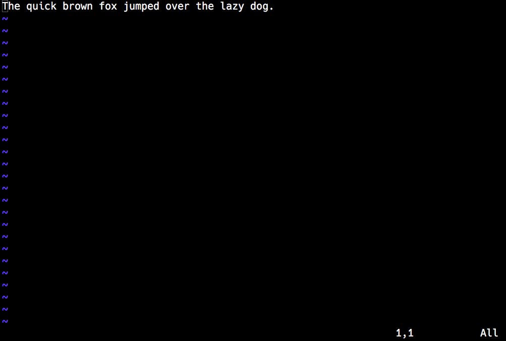
Exactly describe the changes you want to see.
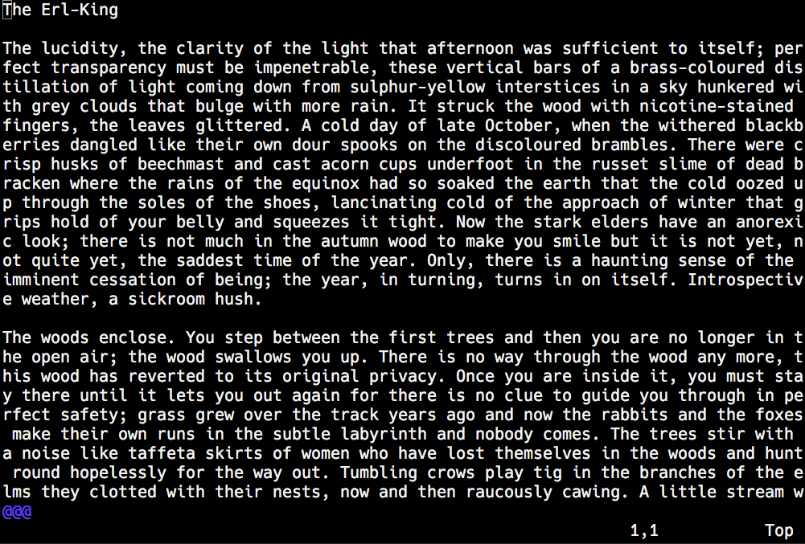
w Move to the start of the next worde Move to the end of the next wordb Move back one wordf. Move to the next period '.' on this linefA Move to the next capital 'A' on this lineF; Move to the previous semi-colon on this line} "Move to the next section"G "Move to the end of the document"gg "Move to the beginning of the document"d Delete (cut)y Yank (copy)c Change (delete and change to insert mode)These require a motion so that Vim knows what to act on.
dip "Delete in paragraph"y3w "Yank the next three words"ct. "Change until the next '.'"dG "Delete to the end of the document"
The above changes are all just keystrokes.
yy3pfjcwflew^[jciwsoared^[jFqc/the^Mslow green turtle crept past ^[
u UndoCtrl-r RedoWe think of Vim as primarily text editor…
/ "Start a search going forward in the document"? "Start a search going backwards in the document"n "Go to the next search hit"N "Go to the previous search hit"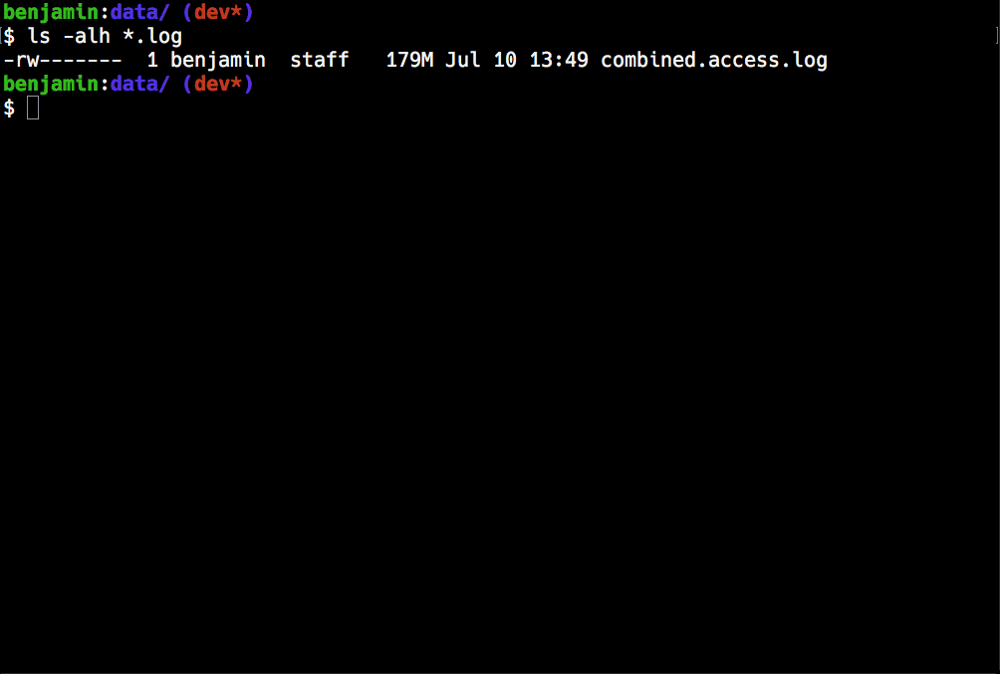
It's hard to know exactly where the cursor has jumped to.
What if we could get some better visual feedback?
:set incsearch "Turn incremental search on":set hlsearch "Turn highlight search on":set number "Turn line numbers on":set wrap "Turn on line wrapping":set noincsearch "Turn incremental search off":set nohlsearch "Turn highlight search off":set nonumber "Turn line numbers off":set nowrap "Turn off line wrapping"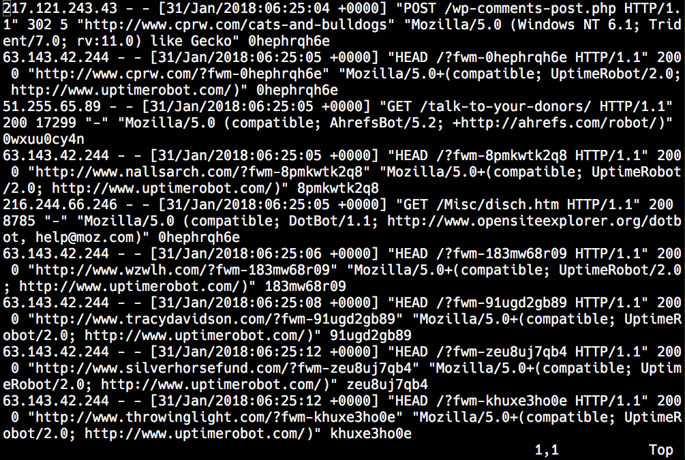
Ctrl-f Scroll one page forwardCtrl-b Scroll one page backwardReplacing tedious tasks.
Vim has named registers from a .. z
Think of these like a variable that you can store text in.
qq "Start recording a macro to the 'q' register"q "When done, press q again to stop recording"@q "Replay the macro in the 'q' register"@@ "Replace the last used macro"12@q "For twelve times, replay the 'q' macro"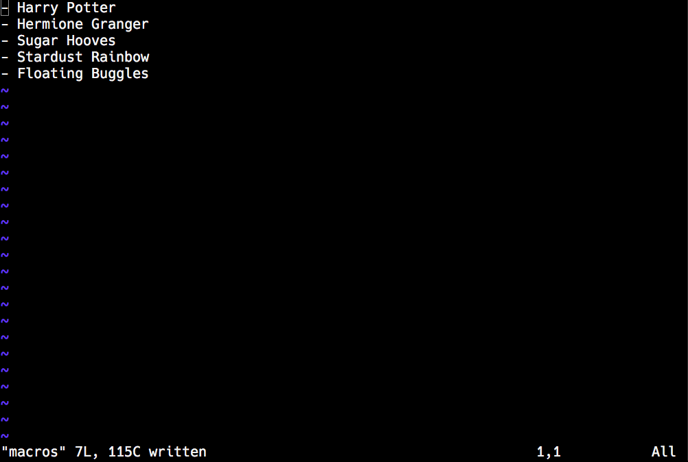
The keystrokes for the above transformation looks like this:
0cl#^[lly$o^[p:s/ /_/g^M^Vu^[Vu^[i - https://example.com/^[o - Notes:^M^[j
Because creating and using a macro is so easy, this becomes a great way to apply tedious and repeditive changes.
While "Normal" and "Insert" mode are the most common modes in Vim, Ex-mode is where things really get exciting!
You've probably already made use of this mode with
:w Write (save):q Quit:help ex-cmd-index – get a list of all ex commands
:g/regex/command
"Do stuff on lines"
:g/regex/p
"Global Regular Expression Print"
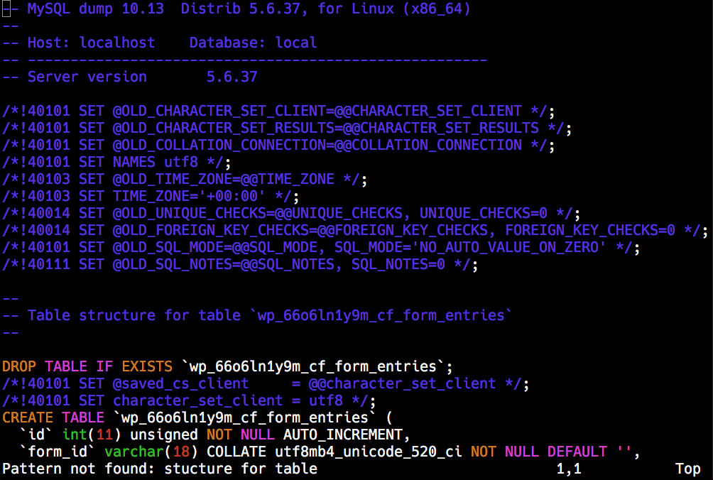
:g/regex/d "Delete every line matching a regex":v/regex/d "Delete every line NOT matching a regex"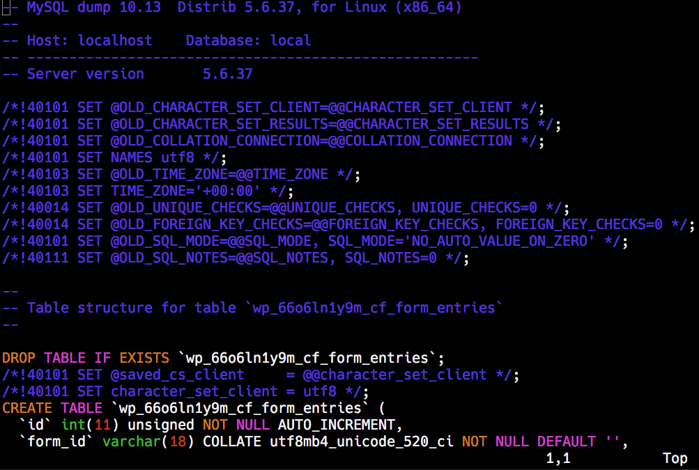
:g/regex/normal @q
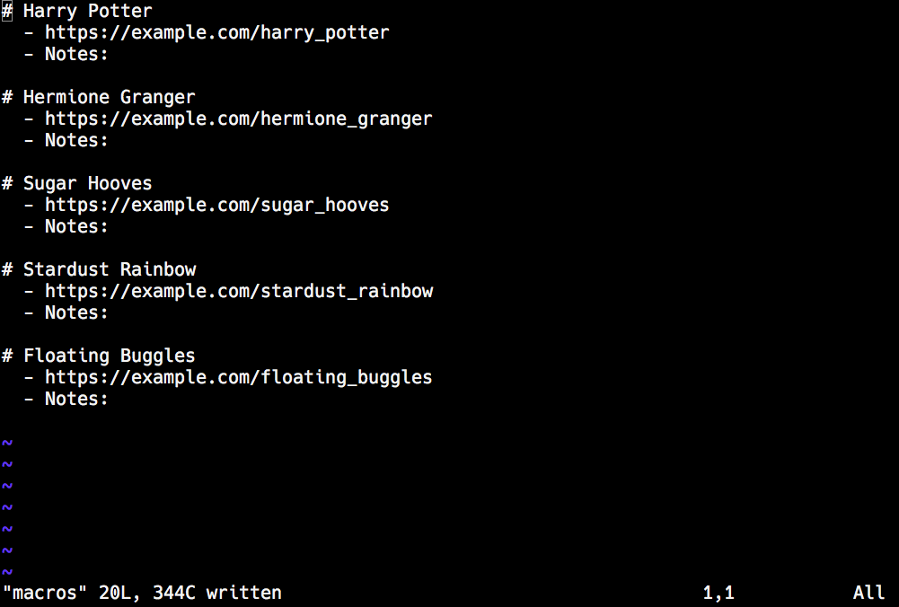
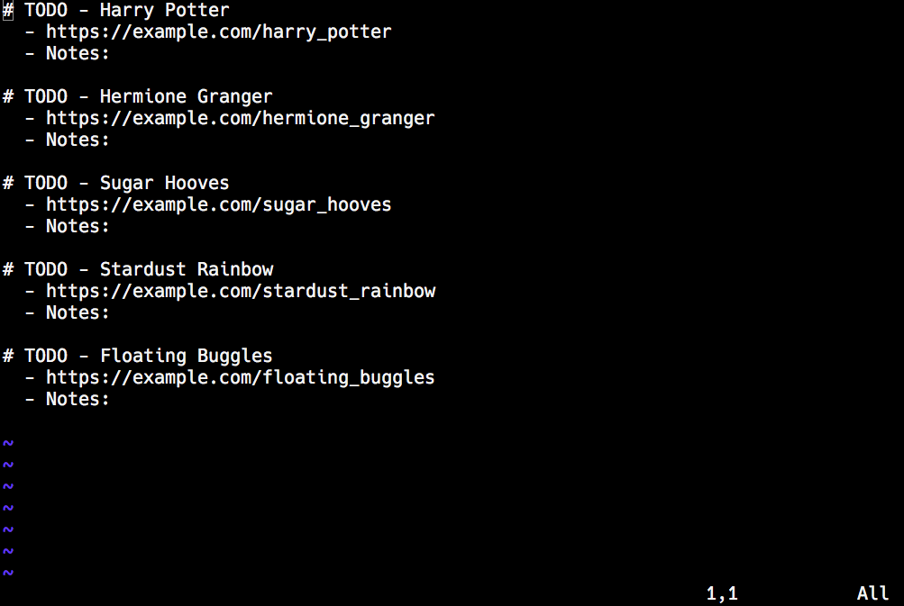
vim -c ":<do-stuff>"
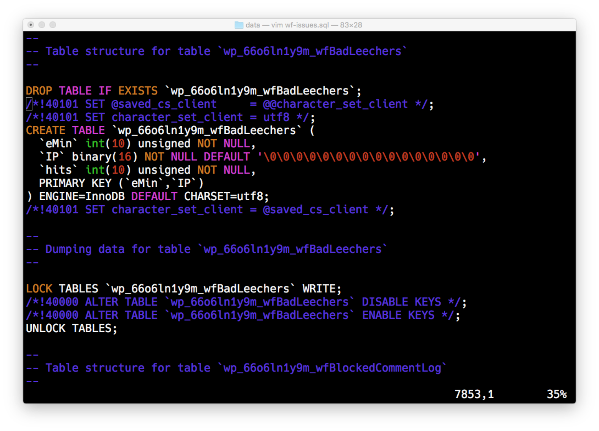
#!/bin/bash
# Usage: remove-wf-tables.sh db.sql
file="$1"
mv "$file" "$file.original"
vim -c 'let @t=""' \
-c ':g/\v_wf.{-}\`/normal "Tyapdap' \
-c ":sav $file" \
-c ':new wf-tables.sql.bak | :normal "tp' \
-c ':wa | :qa' \
"$file.original"
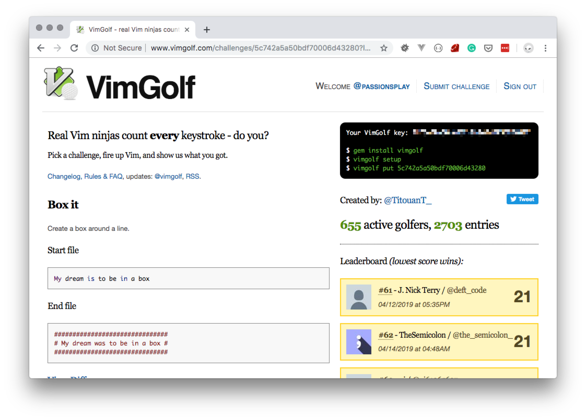
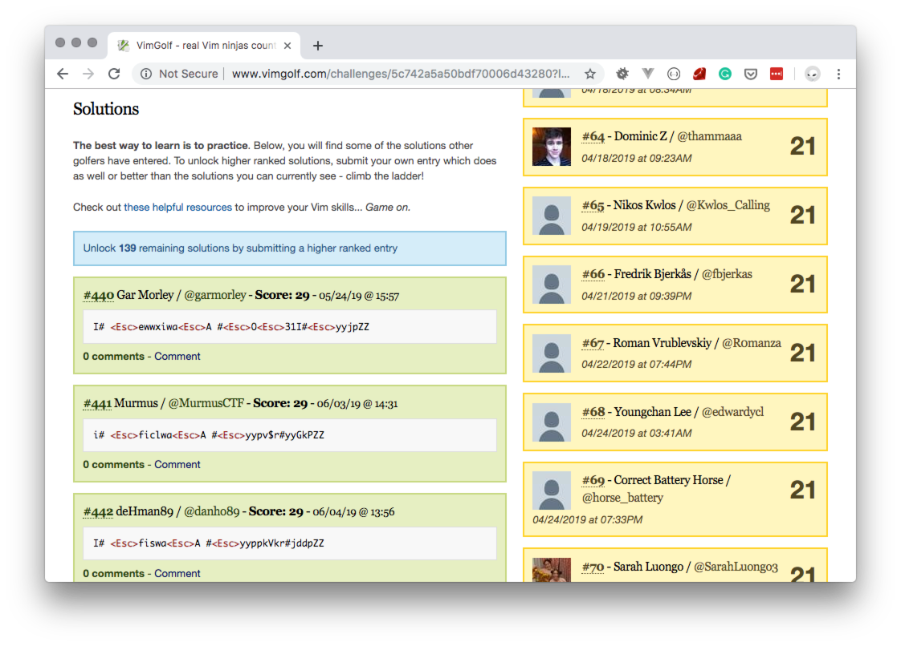